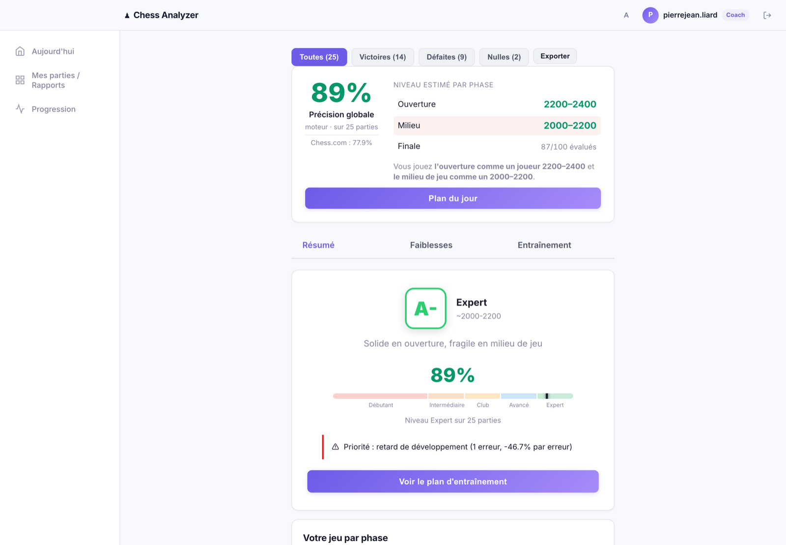
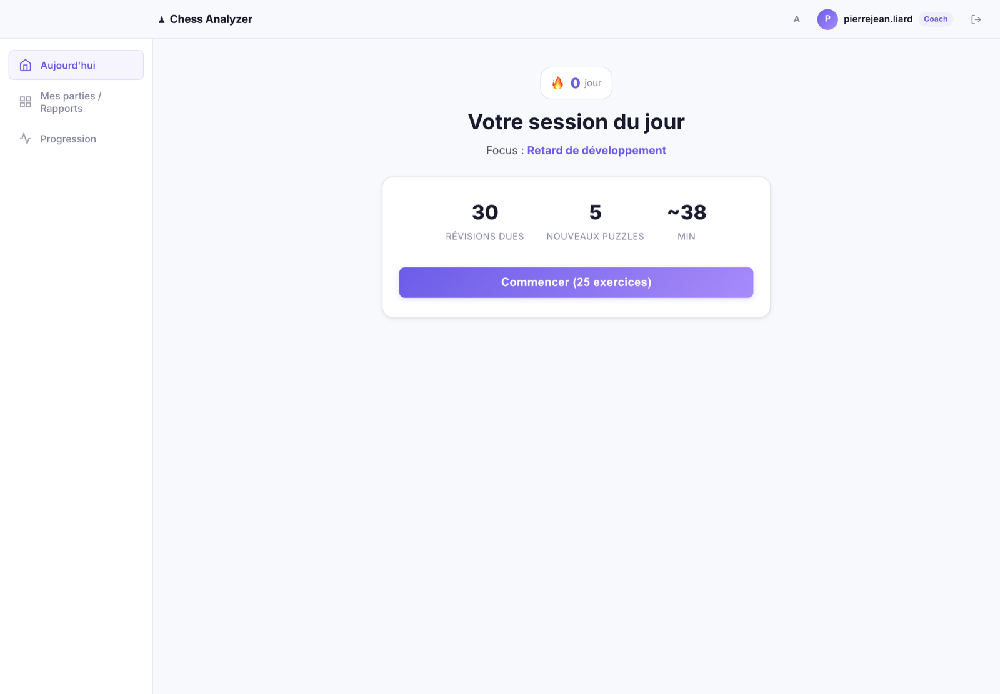
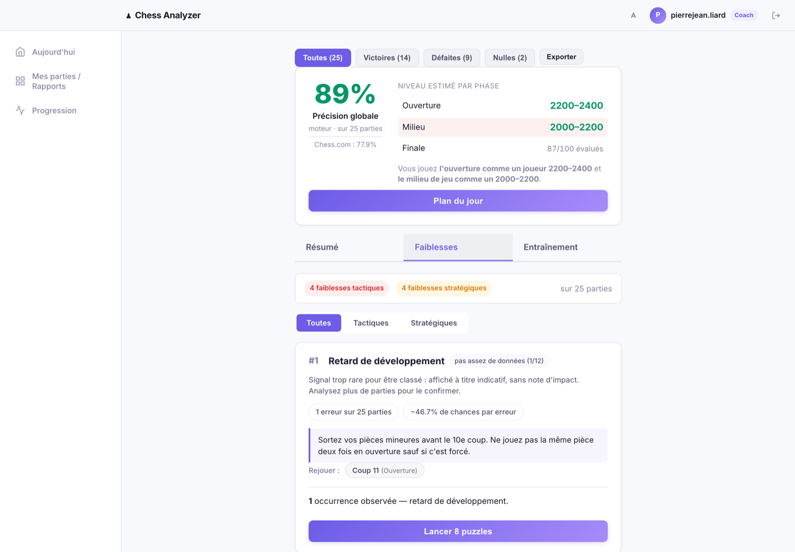
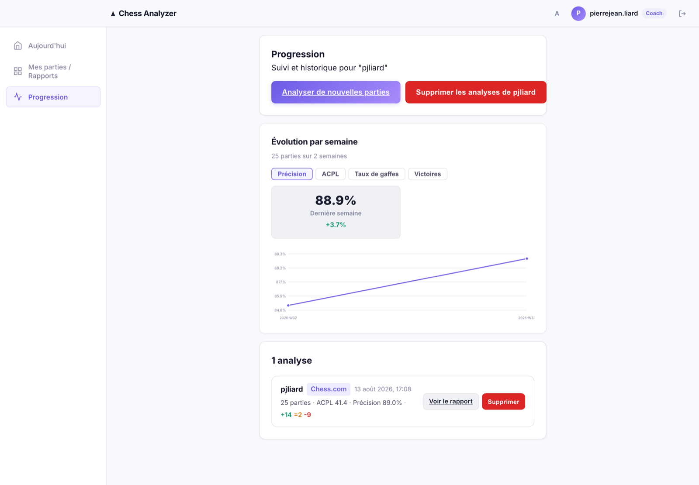

Pierre-Jean Liard
Python, React, Stockfish. Je construis des systèmes dont les résultats résistent à l'examen.
Projet
Analyse les parties d'un joueur, identifie ce qu'il rate systématiquement, et en fait une séance d'entraînement quotidienne.

Fonctionnement
Une seule étape coûte cher. Elle ne tourne qu'une fois par partie.
Technique
Le moteur donne une évaluation. Il reste à en tirer un jugement qui tienne.
Décisions
Séparer le moteur de l'interprétation. Analyser 25 parties prend 18 minutes ; reconstruire leur rapport depuis le cache en prend 70. Une règle de classement se corrige sans réanalyser l'historique.
Budgéter en nœuds, pas en temps. Une limite de temps donne un résultat différent selon la machine — le suivi de progression n'aurait plus de sens. Coût : 2,27 s par coup.
Refuser les chiffres non soutenables. Une faiblesse exige 12 occurrences et une borne de Wilson au-dessus de la cohorte ; un niveau par phase, 100 coups évalués. En dessous, l'app affiche qu'elle ne sait pas.
Échouer plutôt que deviner. Sans Stockfish, l'analyse s'arrête. Un repli sur le comptage matériel donnerait une précision de 100 % — un rapport faux et parfaitement crédible.
Produit
Le diagnostic devient une séance de dix minutes, renouvelée chaque jour.



Fiabilité
Tests sur deux niveaux. Les unitaires tournent en 22 s ; les tests d'intégration pilotent un vrai moteur sur de vraies parties. Un marqueur sépare les deux, la CI exécute tout.
Constante magique. Probabilité de gain, seuils, précision, découpage des phases : chaque formule cite sa source primaire chez Lichess, en commentaire dans le code.
Défauts trouvés en pilotant l'app alors que 1 139 tests passaient : un bouton vers une route inexistante, une sonde de santé qui mentait, une fuite de données entre comptes. Ces bugs vivent dans les jointures, là où les tests unitaires ne vont pas.
Stack
Python, Flask, SQLAlchemy, Celery + Redis, PostgreSQL, JWT, Stripe.
React, React Router, échiquiers interactifs, rapport en trois couches.
Stockfish en UCI, tables Syzygy, livre d'ouvertures, 5,9 M puzzles.
pytest, GitHub Actions, Docker, audit complet du projet documenté.